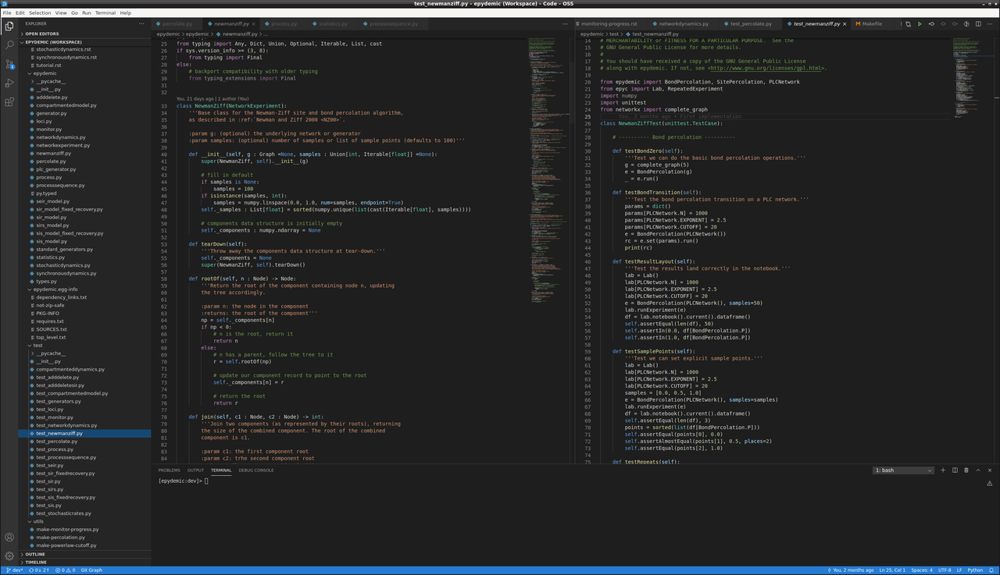

I recently tried out a new development environment for my Python development, and noticed an unexpected convergence in the designs of the two tools.
I've been a long-time Emacs user. I periodically get a desire to try something new, something less old-school, just to see whether there are advantages. There always are advantages, of course -- but often significant disadvantages as well, which often keep me coming back to my comfort zone.
My most recent excursion was to try Microsoft's VS Code.

This is handily cross-platform, being built in Javascript on top of Electron. It's got a lot of nice features: a tree view of the project in the left-hand pane, syntax colouring, code style linting, integrated debugging and unit test running, integrated connection to git, and so on. Looking a little closer there are all sorts of status markers around the code and in the ribbons at the bottom of panes and the window overall to show status that might be important.
But it's so slow. That's a feature of VS Code, not of Electron (as I first suspected), because other Electron-based editors like Atom aren't as slow. And my development box isn't the latest, but it also isn't that old.
So I reverted to Emacs, but upgraded it a little to more modern standards. Specifically, I installed the elpy Python IDE, with assorted other packages suggested by various sites. The result is this:

Now for anyone who's used Emacs for a while, it's definitely still
Emacs -- not least with the convoluted keystrokes and infinite
customisation you either love or hate. But it's striking how similar
the two IDEs now are, and striking how VS Code has inherited some
ideas from Emacs: resizeable panes, modelines in the ribbon, markers
in pane gutters, and so forth -- things that Emacs-based applications
have had for years, which have now migrated into "the mainstream".
Both the feature sets and the visuals of the two systems are very
similar indeed. Both are entirely cross-platform and extensible. For
VS Code you write extensions in Javascript; for Emacs you write them
in Lisp; and that's about it. And Emacs is a lot faster on my
set-up. There are some limitations -- I've yet to get the hang of
using pdb as a debugger, for example, especially for modules
and from within tests -- but the functionality is really quite comparable.
I think it's safe to say there's been cross-fertilisation between VS Code (and other IDEs) and Emacs over the years. A lot of the developers of the former quite possibly used the latter. But I strongly suspect that most of the traffic has gone from Emacs to the other systems: the similarities are just too great to be accidental. It's interesting to think that a system that emerged at the dawn of the free-software movement has had -- and is still having -- such an influence on modern development tools. And I'm happily back in my comfort zone.